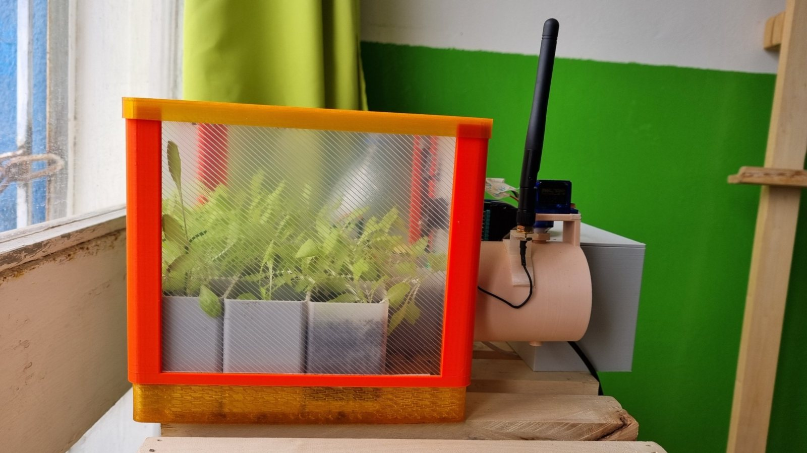
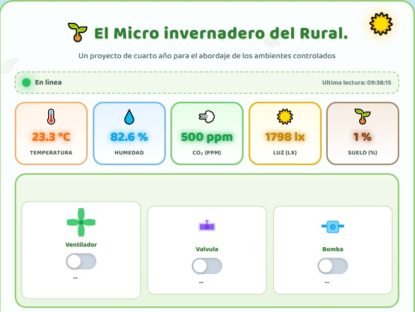
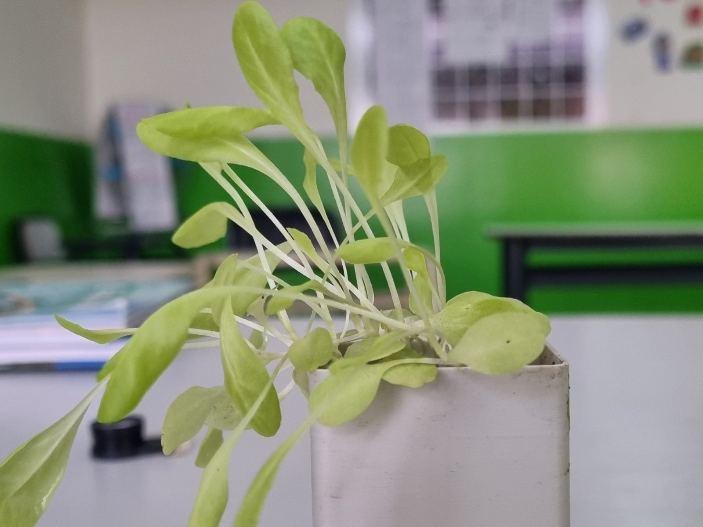

¿Cómo producir alimentos suficientes, de calidad y de manera sostenible para toda la población?
Con esa pregunta arrancamos el cuatrimestre en cuarto año. El crecimiento de la población, el cambio climático, la falta de agua, los suelos cada vez más desgastados y los fenómenos climáticos extremos complican la producción de alimentos en muchas partes del mundo. Es uno de los grandes desafíos de este siglo, y la ciencia y la tecnología ayudan a entender cómo producir más y mejor, cuidando los recursos naturales.
Pero antes había que responder otra pregunta: ¿qué necesita una planta para crecer y dar alimento? Estudiamos cómo influyen el aire, el agua, el suelo, la luz, la temperatura y el dióxido de carbono (CO₂), por qué algunos cultivos se dan bien en una región y no en otra, y qué se puede hacer para mejorarlos. De ahí salió la idea: armar un microinvernadero con sensores para ver todo eso en un cultivo de verdad.

Lo miramos desde cualquier lugar
¿Se puede cuidar un cultivo sin estar al lado? El invernadero tiene una página web donde se ven sus datos: temperatura, humedad, CO₂, luz y humedad del suelo. También hay fotos, un video y una bitácora para anotar lo que vamos viendo. Desde cualquier sede o paraje de la escuela podemos ver cómo está el cultivo y cómo cambia con los días.

La página está abierta para cualquiera que quiera mirar
Entrar a la página del invernaderoviperplus.github.io/INVERNADERO-V2Ventilar, abrir y regar
Además de medir, tiene un ventilador, una válvula para que circule el aire y una bomba para regar. Con eso probamos qué pasa cuando sube la temperatura, cómo cambia el ambiente al ventilar y cuándo conviene regar según lo seca que esté la tierra.

Lo que vemos en clase lo vemos pasar en un cultivo de verdad. Y como todas las sedes miran el mismo invernadero, lo compartimos aunque estemos lejos.
Timelapse del microinvernadero
El microinvernadero en video
Mirá cómo está el invernadero ahora
Ver el microinvernadero en vivoviperplus.github.io/INVERNADERO-V2